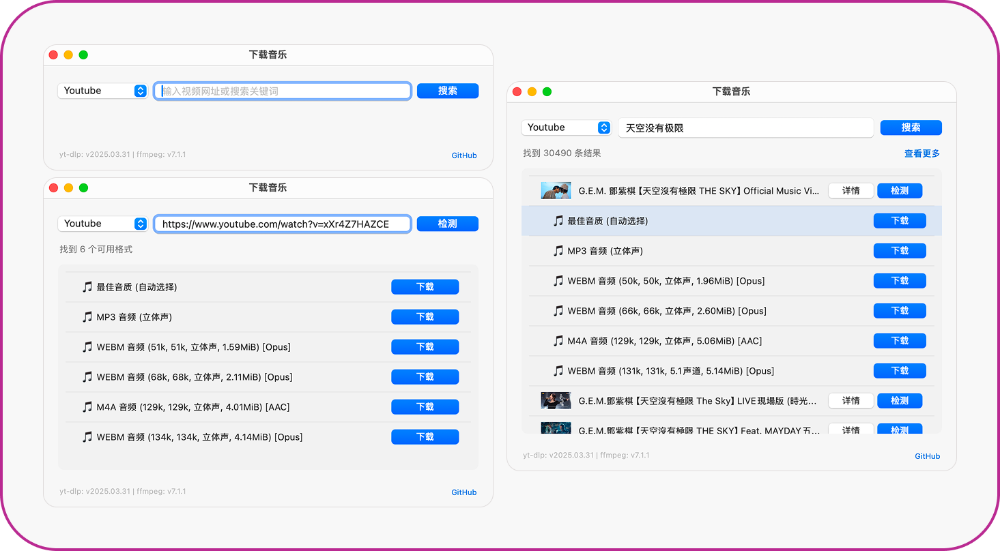

MacMusicPlayer
一款优雅简洁的 macOS 菜单栏音乐播放器，采用 SwiftUI 构建，完美融入 macOS 生态系统，为您带来极致的用户体验。


📦 安装说明
Homebrew 安装（推荐）
brew tap samzong/tap
brew install mac-music-player
下载 DMG
从 Releases 页面下载最新版本的 MacMusicPlayer.dmg。
安全提示：首次运行时如遇到安全警告，请右键点击应用选择"打开"，或运行：
xattr -dr com.apple.quarantine /Applications/MacMusicPlayer.app
✨ 核心特性
- 🎵 轻量级菜单栏播放器，随时掌控音乐播放
- 🎨 原生 macOS 风格界面，完美支持明暗主题
- 🌍 多语言支持（简体中文、繁体中文、英语、日语、韩语）
- 🎧 支持多种音频格式（mp3, m4a, wav, flac, aac, aiff 等）
- 🔄 多种播放模式（顺序播放、单曲循环、随机播放）
- 📥 支持从在线源下载音乐（YouTube、SoundCloud 等）
- 💾 智能记忆上次音乐文件夹位置
- 🚀 支持开机自启动
- 😴 防止系统休眠功能，确保音乐不间断
- ⌨️ 支持媒体键控制
📷 截图
菜单项

下载音乐

🛠 开发
详细的开发指南请参考：开发者文档
🤝 贡献指南
欢迎提交 Issue 和 Pull Request！
📄 许可证
本项目采用 MIT 许可证 - 查看 LICENSE 文件了解详情。